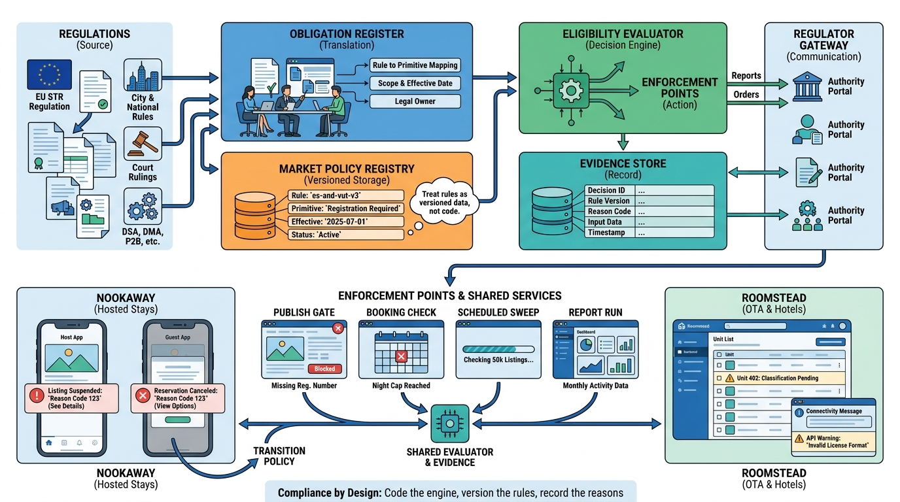

Part VII — TRUST: Making Strangers Safe to Stay With
Rules of the Stay: Short-Term Rental Regulation, DSA and Consumer Law

Image generated by Google Gemini (gemini-3-pro-image-preview)
Part VII — TRUST: Making Strangers Safe to Stay With

Image generated by Google Gemini (gemini-3-pro-image-preview)